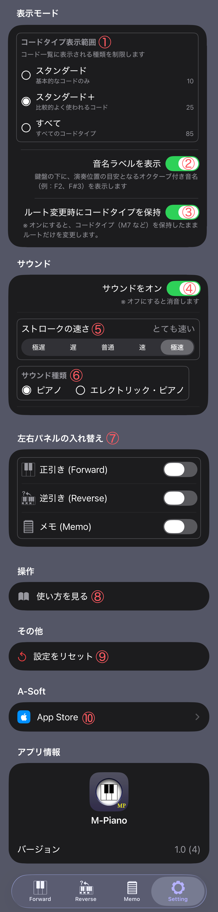

Setting
Setting
アプリ設定
アプリ設定
Settingでは、M-Pianoの動作や表示を設定できます。
ForwardやMemoの表示内容も
ここで変更できます。

① コードタイプ表示範囲
Forwardで表示するコードタイプの範囲を設定します。基本的なコードだけを表示することも、より多くのコードタイプを表示することもできます。
② 音名ラベルを表示
鍵盤上に表示される音名ラベルの表示・非表示を切り替えます。音名を確認しながら学習したい場合に便利です。
③ ルート変更時にコードタイプを保持
ルート音を変更したときに、現在選択しているコードタイプをそのまま維持するかどうかを設定します。
④ サウンドをオン
コードや鍵盤を確認するときに音を鳴らすかどうかを設定します。オフにすると音は鳴りません。
⑤ ストロークの速さ
コード再生時のストローク速度を調整します。ゆっくり確認したい場合や、自然な演奏感に近づけたい場合に使用します。
⑥ サウンド種類
再生音の種類を選択できます。
1: ピアノ
2: エレクトリック・ピアノ
⑦ 左右パネルの入れ替え
iPadなど左右に分かれた画面表示で、左パネルと右パネルの配置を入れ替えます。
⑧ 使い方を見る
M‑Pianoのヘルプページを開きます。各画面の操作方法を確認できます。
⑨ 設定をリセット
Settingで変更した設定を初期状態に戻します。
⑩ AppStore
App Storeのページを開き、レビューの投稿やアプリ情報を確認できます。